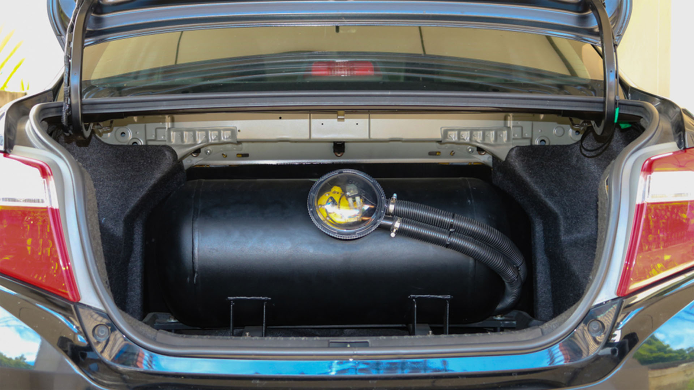
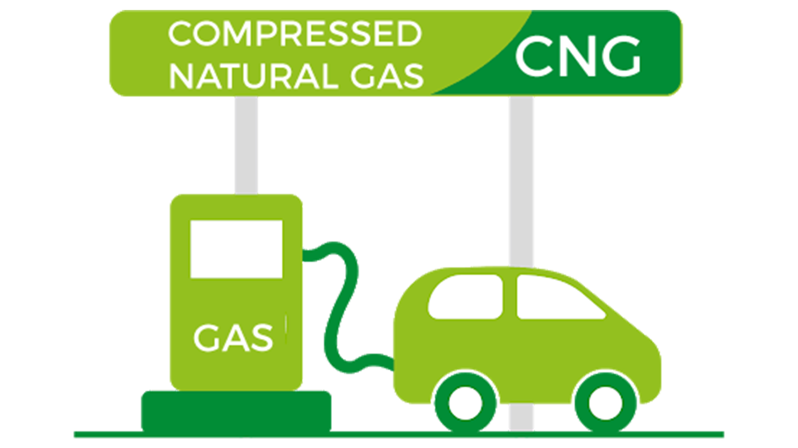
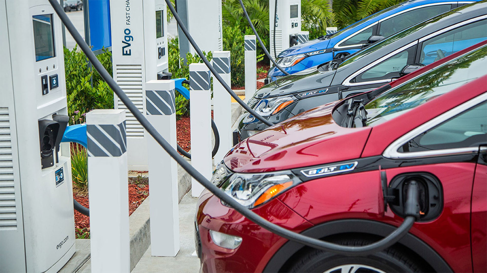

FUEL TYPES
Petrol:
Leaded: A type of petrol that contains lead additives. Leaded petrol has largely been phased out due to environmental concerns, as lead is harmful to both human health and the environment.Unleaded: Petrol without lead additives. Most modern vehicles are designed to use unleaded petrol, which helps reduce air pollution and mitigate environmental impact
Premium Fuels(e.g. Shell V-Power): A collective term for higher-octane petrol options, including premium unleaded and super unleaded. These fuels may offer enhanced performance and engine protection.
Premium Unleaded(95 RON): A higher-octane version of unleaded petrol, often with additional detergents and additives. It can provide better engine performance, fuel efficiency, and cleaner combustion
Super Unleaded (97/98 RON): Similar to premium unleaded, super unleaded petrol has a higher octane rating, contributing to improved engine performance and reduced risk of engine knocking
RON: A measure of a fuel's resistance to knocking or pre-ignition (combustion of the air-fuel mixture before the intended ignition spark occurs) in an internal combustion engine. A higher RON value indicates a higher resistance to knocking. Fuels with higher RON values are considered more suitable for high-performance and high-compression engines.
E10: Petrol containing up to 10% ethanol (bioethanol) blended with traditional petrol. E10 is another form of renewable fuel, and its use may be subject to compatibility with some vehicles
E5: Petrol containing up to 5% ethanol (bioethanol) blended with traditional petrol. E5 is a form of renewable fuel that can help reduce greenhouse gas emissions

Diesel:
Regular Diesel: Standard diesel fuel used in most diesel engines. It typically meets basic regulatory requirements and is suitable for a wide range of diesel-powered vehiclesPremium Diesel: A higher-quality diesel fuel with additional additives and enhanced properties, often designed to provide improved engine performance and fuel efficiency
ULSD(Ultra-Low Sulphur Diesel): Diesel fuel with significantly reduced sulfur content to meet environmental regulations. ULSD is the standard for highway diesel fuel in many regions
Cetane rating: The cetane rating is a measure of the ignition quality of diesel fuel. It indicates how easily the fuel ignites under compression in a diesel engine. A higher cetane rating generally implies better ignition quality, resulting in more efficient combustion and improved overall engine performance. It is a counterpart to the octane rating used for gasoline.

LPG(Liquefied Petroleum Gas):
- A flammable hydrocarbon gas that exists in liquefied form. It is commonly used as a fuel for heating, cooking, and vehicles.- Primarily composed of propane and butane, obtained as by-products from the refining of petroleum or natural gas
- Lower carbon emissions compared to traditional fuels

Biofuels
- Bioethanol: Alcohol-based fuel produced by fermenting sugars from crops like corn or sugarcane. It is commonly blended with gasoline- Biodiesel: Diesel alternative made from vegetable oils, animal fats, or recycled cooking oil through a process called transesterification
- Biogas: Gaseous fuel produced from the anaerobic digestion of organic matter, such as agricultural waste or sewage. It primarily contains methane
- Advantages include Lower carbon footprint compared to fossil fuels, Renewable and sustainable sources etc.
Natural Gas:
Natural gas is primarily composed of methane and is found underground, often in association with petroleum deposits. It can also be produced through other processes such as coal bed methane extraction.Compressed Natural Gas(CNG): Stored in high-pressure cylinders on the vehicle. Typically used in smaller vehicles. Requires specialized CNG fueling stations
Liquefied Natural Gas (LNG): Cooled to a liquid state for storage in cryogenic tanks. Commonly used in heavy-duty trucks. Requires specialized LNG fueling infrastructure.

Hybrid:
Combines an internal combustion engine (usually petrol) with an electric motor. The electric motor assists the engine, improving fuel efficiency and reducing emissions.
Plug-in Hybrid Electric Vehicle (PHEV)
Features both an internal combustion engine and a larger battery pack that can be charged through an external power source. Offers the flexibility to use electricity for short trips and relies on the engine for longer journeys